Abstract
All living beings share the same breath. The same air. Every time we breathe, we come into contact with plants, and if we think this further, we can find an array of infinate hidden connections intertwining throughout our world.
Photosynthesis enables the possibility of breath, therefore, life. Everything that surrounds us is their product. Our air, our food, our homes, our beds, tables, chairs, clothing, medicine. Life as we know it would not exist without them. Yet, we as a society have become completely disconnected from Kingdom Plantae.
Biological and natural sciences have been prioritising the living over the environment, life over the world, and subject over space for the past few centuries, especially in the west. How would our mindset of priorities be challenged if we viewed life from the perspective of plants? Or What would happen if we gave them a different position in our society? What other ways are out there to think about them?
While re-understanding and re-imagining how life comes to be in the world, Emmanuel Coccia in the Life of Plants argues that plants are the most fundamental agents, completely essential to our existence. Along with the beautiful book by Coccia, another main inspiration is a more visual one, called Codex Seraphinianus. Created by Luigi Serafini, it’s an encyclopedia of an imaginary world, which I use as a great source of inspirartion along with my code generated collages to create a visual contemplation of the possibilities.
By approaching this topic from a personal, a spiritual, a more scientific or evolutionary as well as philosophical angle, I try to get a grasp on a world which we could live in, where plants filled in a different position. This essay is practice based research with theoretical contextualisation of contemporary philosophies about plants, nature, and why they are so crucial to me as well as humanity and why we should view and treat them with utter respect.
Introduction
Plants are all around us. They are very important to me, in a general way and on a personal level as well. It’s a well-known fact that they are essential to our existence, we are taught about them in school and growing up, but how much do we know about them as a society? How much do I actually know about them? What are my feelings about them? Why are they important and what is their purpose on Earth? In the following chapters, I dive deep into the world of plants, nature, and the nature of plants to explore them from a personal, spiritual, evolutionary as well as philosophical point of view.
Starting off with my personal and spiritual connection with them, I explore where this fascination might come from, and where it has led me so far. Through this meditation of flowing thoughts, I stumble upon questioning the intelligence on plants and whether they are conscious, and what humanity’s general mindset would be about this. During this part I start introducing my first and main source of reference: The Life of Plants which was written by Emanuele Coccia. This work comes up many times throughout the pages.
Following, comes a more analytical part, where I analyse and dissect plants into three different parts: the roots, the leaf and the flower. I approach them from multiple angles, while making sure to keep everything connected.
When I talk about Dark Green Religions, in the following chapter, I zoom out a bit to see the bigger picture within the topic. I do so to get to know the mindset behind several religious views that base their belief systems and practices on the fact that nature is sacred and has transcendent value.
In the final chapter before the conclusion, having taken in everything that had been said previously, I reflect through a series of connected images to create vague visual contemplation and reflection on how the world could be if plants would have a different position in our society and in our minds. I combine images from an incredible book Codex Seraphinianus, created by Luigi Serafini, and my own code-generated collages to create hopefully interesting narratives. I also give to each combination of images a quote from Emanuele Coccia, that I think relate to each other, to really get the contemplative juices flowing. I wanted it to be quite free and up for interpretation, so everyone might be able to discover something for themselves in them.

Chapter 1:
My Relationship with Plants
I grew up in an environment that made me feel very close to nature, as my parents made sure to help me and my brother find that connection for ourselves. I have grown up next to the forest and spent a lot of time in there. We have spent much of our time as a family in the forests and mountains, always going on hikes, exploring, trying to get to secluded parts of nature that were as far away from people and the citiy as possible. I have started writing this part many times, which should flow the easiest, but I always stop at this point. I think it is because when I think back to so much of my childhood being spent in nature, it makes me very happy and grateful, and I really enjoyed it, and it gave the base for my connection to plants, but I did not have enough maturity and understanding to appreciate it the way I do now. However, it influenced me a lot. The smell of earth, and the noises that the branches made under my feet as I was walking, the sense of power I felt around trees, and gentle strokes of sunlight through the small spots in the crown of the trees, the silence which I felt was loud, the sounds a frozen hollow paddles would make when cracked, and all the beautiful patterns everywhere, in the water, on the ground, in the plants’ leaves, roots, trunks, branches, crowns, and in the sky. At the time, it was very much of a sensorial experience. It still is, but on a much deeper, spiritual level as well.
Even though I had spent all this time around plants growing up, I started to feel more and more passionate about them as I grew older and started having my own plants, in my own direct environment. I care for them, watch them grow, change, turn away from or towards the light, rise or just watch them do their thing. Plants do so much, I love to observe them. I could watch them for hours on end. I am very intrigued by their beauty, the way they function, and how reactive they are to different environmental circumstances. I feel like they are talking to me all the time and that they can sense when I am listening to them or paying attention to them. I have begun to look and think of my plants as specific characters, like they have personalities, as they look, behave and react so differently. They have taught me so much not only about plants and nature but also about myself, and about being present in the moment. They remind me every day of the cyclicality of life and nature. It grounds me to take care of these living beings in my direct environment, to be able to watch them grow live their lives next to me, in the same room as me, being surrounded by the same things, yet having such different priorities and rhythms. However, sometimes I feel that we are not so different after all. At the end of the day, the most important things we need as living beings, in different doses and ways, are not so different in spiritual level as well.
According to Emanuele Coccia, in his book The Life of Plants: Metaphysics of Mixture, our humanity’s general attitude towards plants resonates in the following phrase; “A form of life without personality and without dignity, it does not seem to deserve any spontaneous empathy, or the exercise of a moralism that higher living beings are capable of eliciting”. (Coccia, 2019, 14)
Having a sensation of such emotional and spiritual connection and fascination with plants, I have been wondering about this question; Do plants have a soul or a conscience? Whenever this question is asked, the expected answer would be no, they do not have a soul, consciousness nor intelligence. However, it is a lot more complex than that. It is commonly believed that to be able to possess the mentioned qualities, one needs to have a brain and a nervous system, which plants do not have. Yet, it has been scientifically proven that plants are aware of the differences between what happens inside them, within their interior, and around them, within their exterior realm. Humans and animals are able to do the same, distinguishing between themselves and the world around them. As plants, humans and animals are all able to do this in their own way, it must be a necessity for all living beings to be able to make this distinction between themselves and the outside, so that they can protect themselves. If a living being wants to stay alive, they have to adapt and solve problems. If one is able to solve problems for survival, it would mean that they are able to think and have a conscience, a soul. The question now is not whether they have a conscience, intelligence, soul, but how? How are they able to adapt? Or solve problems? How do they communicate? Or how do plants choose to do all that without having a brain or a nervous system? They seem to choose to concentrate on the exercise of a function on a specific part on their body, distributing a function all over within themselves. For instance, they are able to communicate through molecules, not through the mouth, like humans or some animals do.
It is an extension of human narcissism and arrogance, to presume that plants do not have intelligence or conscience. It is coming from the mindset or belief that human beings are the most important, essential entity in the world, the centre of the universe, and if something does not function the way we do as humans, it is not as valid. As Emanuele Coccia said; “In a sense, antispecies animalism is just another form of anthropocentrism and a kind of internalized Darwinism: it extends human narcissism to the animal realm.” (Coccia, 2019, 14-15)

Chapter 2:
Why are Plants Important?
Plants mean life. They give life to the Earth and all its inhabitants. They are our source of energy, oxygen and the producers of the atmosphere that surround us. Plants adhere to their surroundings completely. “They participate in the world in its totality and everything they meet.” (Coccia, 2019, 15) They can’t run or fly, they always have to remain stationary. The space around them means something different from us; it is between the up and the down, the sky and the ground, and whatever the plan occupies in-between. Unlike many animals, plants cannot choose what surrounds them, they are constantly, completely exposed to the world around them, living together, in unity, with the environment. This unity, the plant and its accommodating world around, cannot be separated; not physically, and not metaphysically. It is a radical way of being. Plants can show us to most direct relation between life and Earth, they are pure observers. One has to understand what the world is in order to understand the plant.
“To live is essentially to live the life of another: to live in and through the life that others have been able to construct or invent. There is a sort of parasitism, a universal cannibalism, that belongs to the domain of the living: it feeds off itself, without realizing that it needs other forms and modes of existence. As though life in its most complex and articulated forms is never anything but an immense cosmic tautology: it presupposes itself and produces nothing other than itself. This is why life seems impossible to explain other than starting from itself. As for plants, they represent the only breach in the self-referentiality of the living.” (Coccia, 2019, 23-24) Plants have the ability to “transform everything they touch into life” (Coccia, 2019, 23). Everything that surrounds us is a product of the life of plants. Our air, our food, our homes, our beds, tables, chairs, clothing, medicine. More importantly from objects and tools, an entire higher animals’ life depends on plant life. This aerobic nature of feeding off the organic exchange of gases not only proves the world’s crucial dependency on plants, but that “our world is a world of plants before it is a world of animals”. (Coccia, 2019, 26)
They have transformed the planet and everything that comes with it; photosynthesis enables the possibility of breath, therefore, life. Life as we know it would not exist without them. Biological and natural sciences have been prioritizing the living over the environment, life over the world, and subject over space for the past few centuries, (especially in the west), but if we view life from the perspective of plants, they challenge this mindset of priorities. They “demonstrate that living beings produce the space in which they live rather than being forced to adapt to it. They have modified the metaphysical structure of the world for good.” (Coccia, 2019, 27)
“The world is by definition the life of others: the ensemble of other living beings. The mystery that needs explaining is therefore the inclusion of all in the same world, and the exclusion of other beings” (Coccia, 2019, 27)
According to Coccia, the discovery of photosynthesis has had a transformative influence on the way that we can think about the world. He says, “the true nature of the photosynthetic process was important not only because they allowed us to make an enormous step forward in our understanding of plant physiology, but because they represented a radical shift in the way we look at the atmosphere. The air we breathe is not a purely geological or mineral reality—it is not just out there, it is not, as such, an effect of the earth—but rather the breath of other living beings. It is a byproduct of “the lives of others.” In breath—the first and the most trivial and unconscious act of life for a huge number of organisms — we depend on the lives of others”. (Coccia, 2019, 76)

Chapter 3:
Root, Leaf, Flower
Every part of a plant serves a specific function. Our blood carries oxygen through our body, from our heart to our brain. Our lungs breath in and out and our stomach digests our food. Our skin protects our body. Plants have their own parts such as roots, stems, leave and flowers and they all have their unique purpose. Each part has a vital role in making sure that the plant survives, lives and thrives.
Root
Plants did not always have roots. Considering the history of plant life, they actually arrived relatively late. They started off from being marine species living in oceans under water, for millions of years, but as they made their way into the land, they were confronted to adapt and overcome new challenges to be able to survive and thrive on land. A big difference between living in water based environments and living on land was the matter of separation of nutrients. Their way of handling this obstacle was to develop and grow root systems under the ground, to allow access to the nutrients and water stored in the soil. This is one of the beautiful examples as proof of the incredible capability of plants for adaptation and problem solving.
Plants are able to collect CO2, water and nutrients straight from their surroundings when living under water. However, when living on land, these nutrients that are essential for their survival are separated between the atmosphere and the soil. So, over time, plants managed to evolve two kind of systems for the collection of their necessary nutrients, from both kinds of environments. The roots of plants that are living on the land serve various purposes that are essential for survival; they provide support and anchor the plant, they also absorb water and nutrients from the soil, they store sugar and minerals, and they carry water and nutrients up to the rest of the parts of the plant. There are many types of roots within each plant’s root system, depending on the type and size of the plant and the kind of service they are required to provide.
Emmanuele Coccia has another beautiful thought on the process of plants separating from water and immerse themselves onto the land: “plants have never abandoned the sea: rather they have brought it where it did not exist. They have transformed the universe into an immense atmospheric sea and have transmitted their marine habits to all other beings. Photosynthesis is, in this sense, a cosmic process of fluidification of the universe, one of the movements through which the fluid of the world constitutes itself: what allows the world to breathe and keeps it in a state of dynamic tension.” (Coccia, 2019, 63) As most roots grow under the surface layer of earth, they seem to live quite a cut off, separate reality from the living beings that exist above the ground. Yet, it is through the roots that plants have the ability to be aware of what goes on all around them, as the vast majority of information on the plant’s own state as well as about the conditions of the environment which it is immersed in, is acquired through their root systems. They are also able to come in contact with other plants with root systems under the ground. In a way, as Coccia says, “the roots make the soil and the subterranean world a space of spiritual communication. Thanks to them, the most solid part of the Earth is transformed into an enormous planetary brain.” (Coccia, 2019, 81)
Roots have symbolic value in our society as well. In literature and art, for example, they are often the symbol of fundamentality and origins, stability. While roots have great importance for their existence, their necessity does not rely in what we would expect. They are not any more necessary for the survival of a plant than other parts of that organism. Looking at it from an evolutionary point of view, for example, the function of photosynthesis is more elemental and at the origin of the plant, than its roots. Said organs have another purpose, which is the ability of networking, instead of isolation or distinction. Having said that, they are not to be considered anything of a secondary attention. white roots are not what we thought they were, it adds even more to their appeal, as they “express and embody, all at the same, one of the most significant traits of plant existence: ambiguity, hybridity, their amphibious and double character.” (Coccia, 2019, 81)
In my own experience with roots, it took me a while to feel comfortable with understanding them. I had to gain some hands-on experience with plants, taking them many times in and out of their pots or the ground to have a close look at them, to be able to grasp how they function. I noticed that very often the characteristics that I know the plant for from its leaf foliage, as well as it’s habits and necessities of water, light, and care reflect on a plants root system. For example, plants that are very sturdy and need less watering tend to have very thick, and sturdy roots systems as well, as they are able to store more water for longer than a plant with very frequent watering needs. Sometimes when repotting, I have to get the soil out of the roots and destruct the original shapes of the plant’s root system. To be able to do so, I have to get my fingers all up in the roots and detangle them, just like I would with my hair. It is always an interesting sensation, as I noticed that more often than not, I underestimate the strength that these roots have. They are really strong, and it still does not really damage the plant if the roots are a bit disrupted for a while, as it is a living being it recovers, just the way that I would.
Leaf
Leaves can be considered as the most important organ of most plants that are vascular. Plants of the color green are autotrophic, which means that they do not collect their food from other living beings. Instead, leaves produce the necessary food for themselves through the process of photosynthesis. During photosynthesis, leaves capture the sunlight, and convert that light energy into chemical energy, which later becomes, fuel for the plant. Carbohydrate molecules such as glucose or sucrose, synthesized from carbon dioxide and water, store this chemical energy. As a waste product, oxygen is released during this process. Leaves enable plants to photosynthesize, which allows us, humans and all other living beings that in some ways depend on oxygen to breathe, to live, to exist. This is why plants are so crucial to life’s existence on earth, as through photosynthesis the production and maintenance of the large amount of oxygen content of our planet’s atmosphere happens. This means that most energy necessary for life on earth is supplied through the leaves of plants.
Leaves come in all sorts of shapes, sizes and colors and patterns. They catch the light and have openings for the water and air to come and go. There are veins within each leave. Just like our veins carry blood and nutrients we need in order to live, veins in the leaves of plants carry water and nutrients to one part of a leaf to another According to Emmanuele Coccia, “leaves are not just the principal part of the plant. They are the plan: trunk and roots are parts of the leaf, the base of the leaf, the simple extension by which leaves, in staying high up in the air, are supported by and nourish themselves from the soil. The whole plant is identified in the leaf, to which the other organs are just appandages. It is the leaf that produces the plant: leaves form the flower, the sepals, the petals, the stamens, the pistils; and it is also the leaves that form the fruit.” (Coccia, 2019, 47) To really be able to grasp the essence and mystery of plants, the leaves must be understood and observed very carefully, from all points of view, and not only from the genetic and evolution side of perspective.
Within then, is “the climate”. The word “climate” is immediately associated with the collection of several gases that surround the atmosphere of the terrestrial globe. It is “an infinite mixture of all things, the present, past and future. The climate is the name and the metaphysical structure of mixture.” (Coccia, 2019, 47) The possibility for the climate to exist happens when all elements within a certain space are mixed together, and when each element is identifiable. They must be “united not through substance, form or contiguity but through the same atmosphere”.
“Climate is the being of cosmic unity. In all climates, the relation between the container and the contained is constantly reversible: what is place becomes content, what is content becomes place. The medium becomes subject and the subject becomes medium.” (Coccia, 2019, 48)
The leaf is the ultimate example for a form of openness. It is life that is capable of handling the constant traverse of the world, taking it all in without being destroyed by it. Next to taking it all in, as a container, it is also producing oxygen which gets exhaled into its surrounding space, and suddenly, the container turns into the content.
To me, leaves are the most beautiful part of any plant. I am absolutely enchanted by the amount of variety of foliage in the plant kingdom. All the colors, patterns, textures, shapes, sizes, weights, the way they grow, I find it all very exciting. I always have to touch the leaves of plants, because I think that they can feel my touch and I can connect with them better. I am always amazed at how plants are so responsive to given circumstances of life, they are able to express themselves in a very understandable manner what is happening within them through their leaves. I know when they do not get enough water, or if they get too much, how they feel about the amount of light they receive, whether they need fertilizing or not, etc. By learning to pay attention to these signs, I have become a lot more aware of my surroundings, especially the living creatures around me, developing even more empathy, respect and fascination towards any life.
Flower
The flower is another incredible evolutionary adaptation that has allowed the plant kingdom to explode into the great amount of diversity of species that exist currently. Sometimes called as the bloom or blossom, developed as an alternative method of reproduction. Flowers are loved and admired around the globe for their beautiful colors, structures and fragrance but their purpose is to perform a very important function that has allowed angiosperms, a division of vascular plants, to become the most dominant group of plants on planet Earth. Their beauty through color and scent makes them attractive to bees, flies or other types of insects. Flowers have developed this way to attract such creatures, so that they can take advantage of their mobility and have them serve as dispersers of pollen between plants. They are made to lure insects as well as other animals in to feed in their nectar, from which animals collect their pollen. As such animals continue their acts of feeding on more and more flowers, said creatures become the pollinators by carrying the pollen from flower to flower. Then, all that is left to happen is for the pollen to be rubbed onto the correct part of another flower, and the magic of fertilization may happen.
In his book, Emanuele Coccia quotes Lorenz Oken as “if one wishes to compare the flower—beyond sexual relation—to an animal organ, one can only compare it with the most important nerve organ. The flower is the brain of plants, that which corresponds to the light, which remains on the plane of sex. One can say that what is sex in the plant is brain for the animal, or that the brain is the sex of the animal”. (Coccia, 2019, 179)
Between the roots, the leaves and the flower, I feel the most distant from the one mentioned last. I find flowers very beautiful of course, maybe too beautiful to the point that I am a bit afraid of them. Not afraid in the sense that they will hurt me, more in a way that I will hurt them. I know that it is not the case most of the time, but I always feel this tactile need to make a connection with a plant, but I notice that I go for the foliage most of the time, as the flower just seems so fragile to me, and it feels more precious to me than the leaves, so I just tend to admire them from the distance, maybe smell them and have a closer look, but never really touch. They also seem very mysterious to me. This combination of mystery, seductivity and beauty intimidates me in the form of the flower, even though I am aware that the purpose of such characteristics is to attract, sometimes protect, and ultimately, to reproduce. I respect this, and I will always admire, but for now just from a bit of distance.

Chapter 4:
Dark Green Religion
As philosopher Seyyed Hossein Nasr said in Man and Nature: The Spiritual Crisis in Modern Man: “The environmental crisis is so critical that it is necessary to quickly go beyond what has been done during the past few decades to solve it. What is required is the re-examination of our very understanding of what it means to be human and of what nature is, along with the establishment of the harmony between man and nature.”(Nasr, 2004, 6)
Certain religious belief systems and practices can be a way to get closer to establishing a certain kind of harmony between man and nature, believes Bron Taylor, who is an American scholar and conservationist, Professor of Religion and Nature, Environmental Ethics, and Environmental Studies at the University of Florida. He spent a lot of time studying numerous environmental movements around the world. The more he saw, the more he began to see some patterns of similarities within these movements. He has come up with ‘dark green religion’, which is an umbrella term that can describe several religious beliefs and practices that can be characterised by deep admiration for nature, and that view destructive acts towards it profane. Devoted followers feel a strong connection to the earth and its living systems. Followers of Dark Green Religion believe that “nature is sacred, has intrinsic value, and is therefore due reverent care.” Tied in this belief is a sense of responsibility for nature and a connection with non-human entities, being aware of the fact that we all have common ancestors, and all life is interconnected in various ways and mutually dependent on each other. There must be a mindset of humility about the positions of the humans in the world.
Generally, these belief systems of Dark Green Religion are deeply ecological, biocentric, or ecocentric. This means that it’s believed that all Earth’s ecosystems, atmosphere, water and land should be respected with full capacity, prioritizing the well-being of such elements of our planet, over our own human needs and preferences. Dark Green Religions completely rejects the outlook on life from an anthropocentric point of view. This creates a sharp contrast with our current society, as at the moment humanity and its actions is seems to be dominated by the ideologies of anthropocentrism. This is very visible in all aspects of our societies, numerous examples being our responses as a species as we face one ecological crisis to the next.
Dark Green Religions have a very critical view of materialism, modernity, consumeristic behaviors, as well as the Enlightenment ideas of human progress. Believers of Dark Green Religion prefer a holistic, rather than individualistic perspective on life. This means that concept of populations, ecosystems, species, all of the ecosphere are valued highly. The collective as a whole is of way more importance than the individual. The word ‘dark’ in Dark Green Religion is included by Bron Taylor to make the recognition of the fact clear that “as a part of sacred nature, man is both a predator and prey”. This is a grim yet real recognition of the cruciality and scale of the environmental crises that keep confronting us every day. Taylor believes that the environmental situation has gone so far that awareness and having the right values isn’t enough anymore. He reflects that as an end result, revolutionary action along with violent force might be necessary in order to be able to change the bad patterns of behaviors which our human societies have accumulated over generations, in order to save the planet and avoid the civilizational suicide of the human race. According to Bron Taylor there are four main, general forms of dark green religion which are quite inclusive for different examples, and up for quite free interpretive power, if the core values or dark green religion are still respected. These categories are Spiritual Animism, Naturalistic Animism, Gaian Spirituality and Gaian Naturalism. These can include belief systems on animism, shamanism, pantheism, panentheism, numerous forms of paganism, ancient polytheism, as well as forms of nature-based spirituality, philosophies and radical environmental activism.

Chapter 5:
A Visual Contemplation of
How the World Could Be If We Gave
Plants a Different Position of
Importance and Looked at Them From a
New Perspective
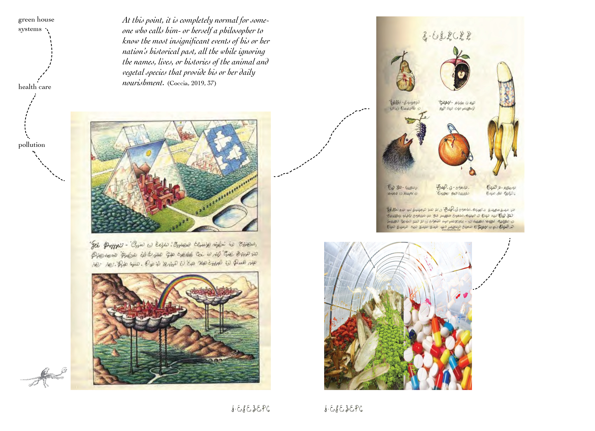
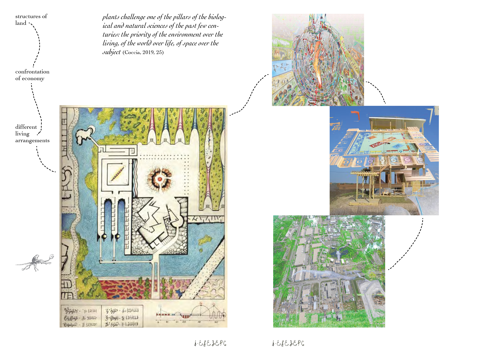
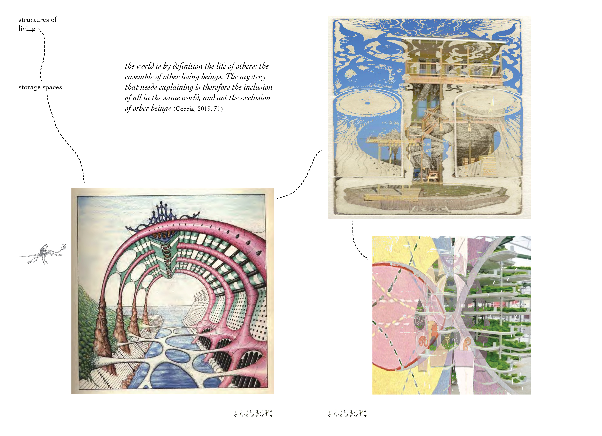
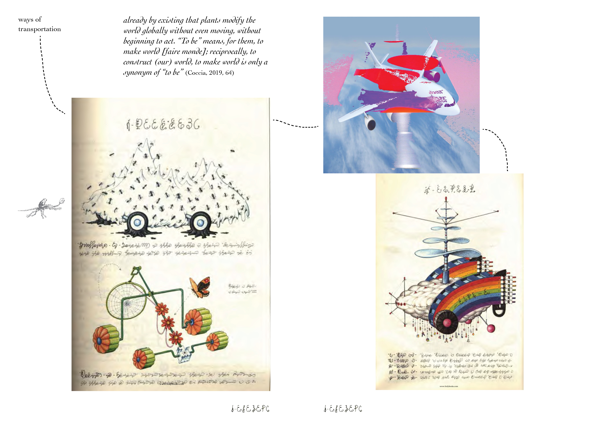
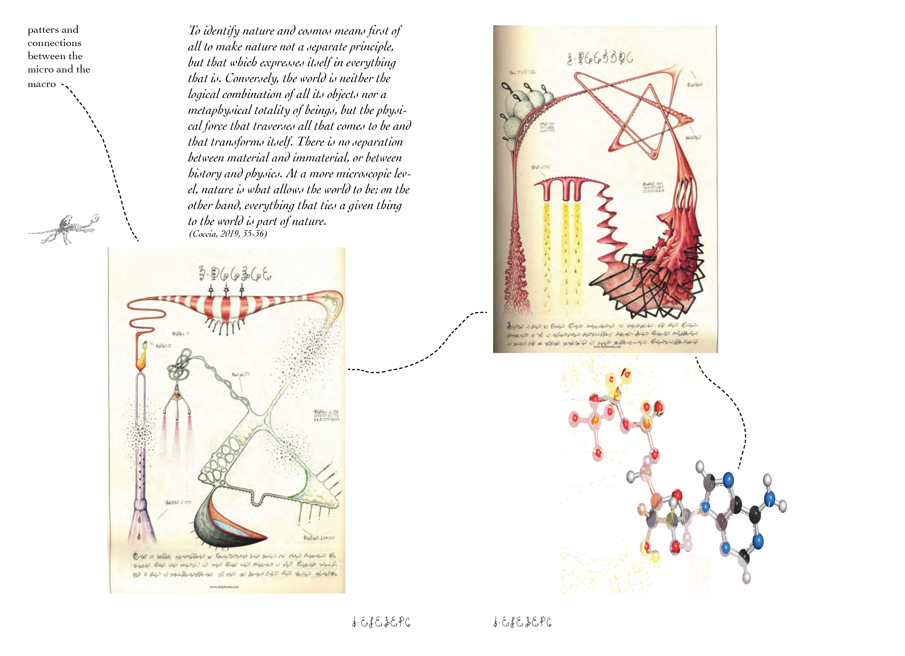
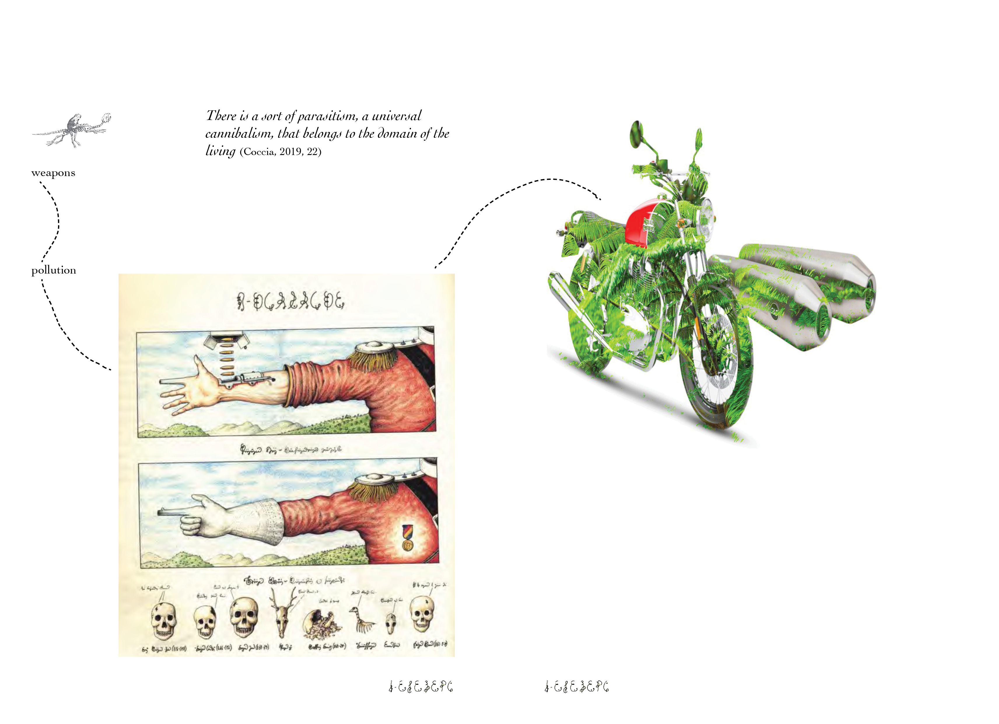
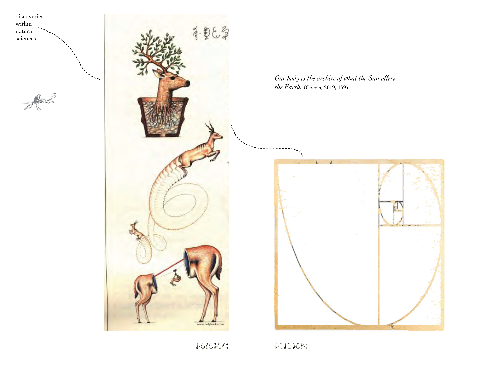
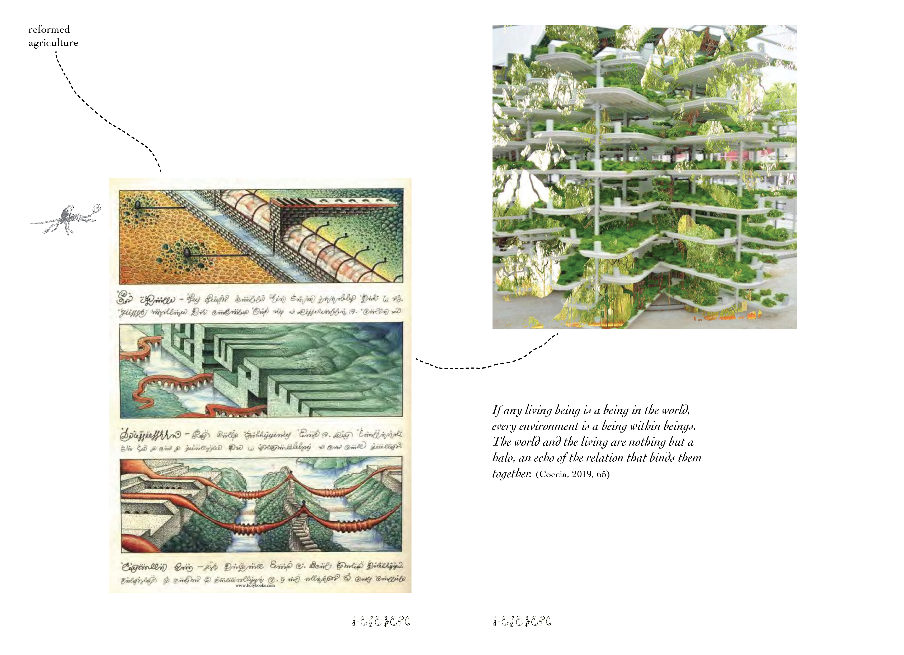
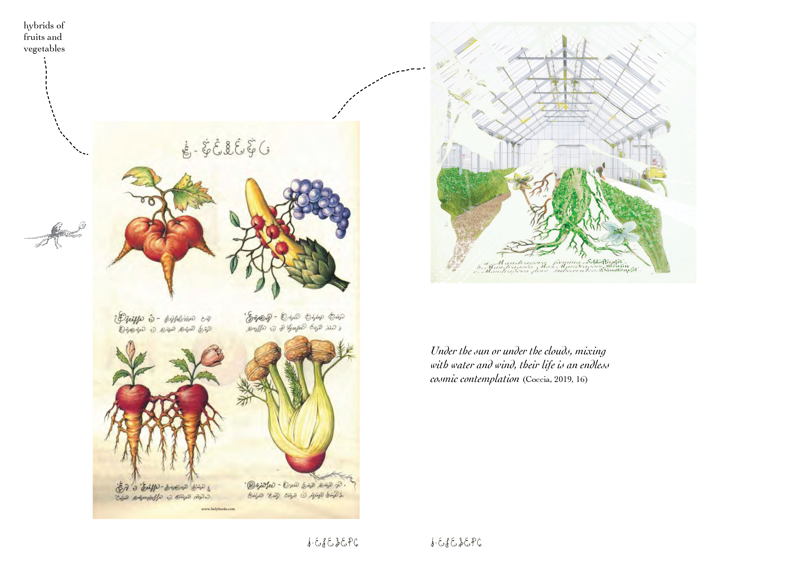
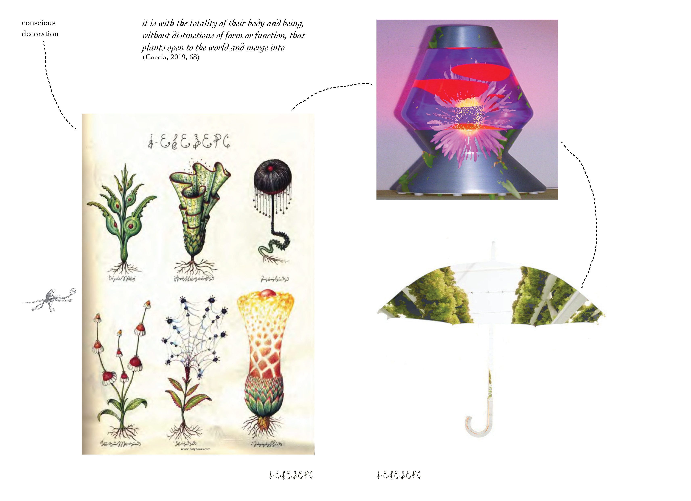
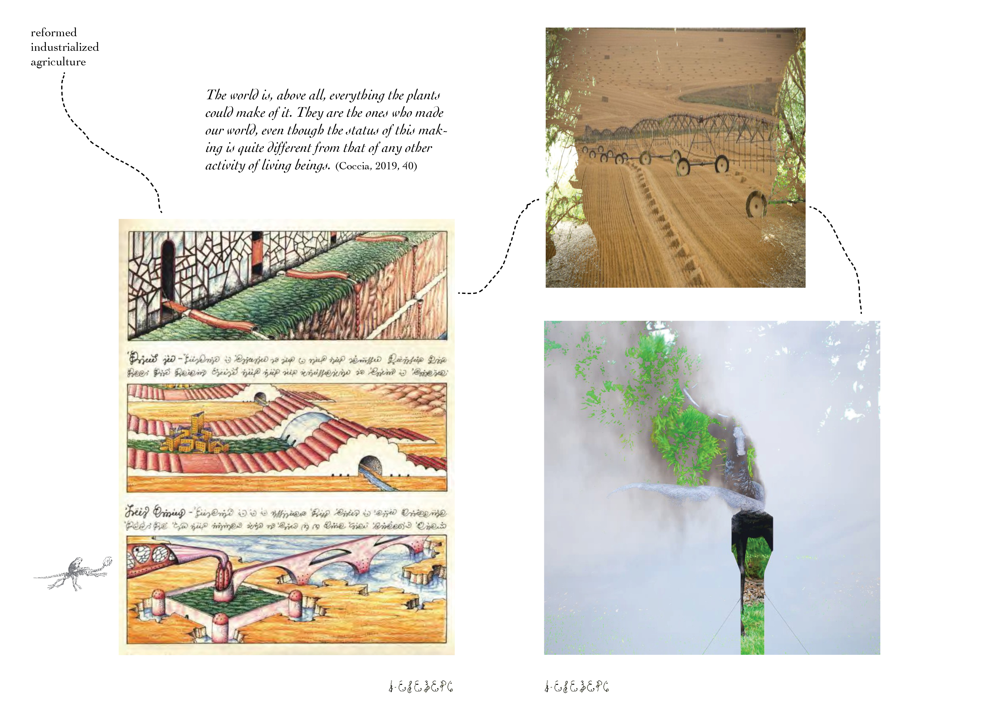
Conclusion
In these past pages, I have explored what plants are, what they mean to me as well as how and why I can relate to them so much. I dove into the search through words of expression to figure out why I am so fascinated by them. I’ve never put this side of myself into words this way, and it was quite an eye-opening experience to reflect on this.
I have done so by reading beautiful pieces of literature, such as a book called The Life of Plants; a Metaphysics of Mixture, written by the philosopher Emmanuele Coccia. This book really opened up my eyes to a whole new perspective to look at plants and nature from. It not only gave me a different vision and knowledge of plants but also through this, I have gained a new vision of the world. It gave me a taste of how one’s perspective of the world around them could be changed by the way we think about the things that surround us. It is our choice to make how we want to see the world, and after being exposed to this kind of vision towards the outside, I will continue to keep digesting the material this book offers over and over again, along with all of the other scholarly literature it mentions in its references.
I’ve gone through plants from several different angles throughout the chapters. Starting off with an in-debt description of how I relate to plants personally, then going through plants from spiritual perspectives, an evolutionary, deceptive, and reflective aspects and well and a philosophical side, has been a really interesting journey to think about plants from so many different points of views.
I explored numerous other sources related to this topic, one of them being the book called Dark Green Religion, which gives insights into numerous belief systems and practices related to nature, it’s sacredness and why it should be so crucial to us humans to keep that in mind. In preparation for writing this thesis as well as during, I read and listened to the works of Monica Gagliano, who is a scientist that talks about plant intelligence and her experiences with it. It was a great source of inspiration and it’s a pity that I didn’t manage to include her points of views and stories.
The chapter contemplation with the series with quotes and images was a very enjoyable one to work on, it was nice to express all the words consumed and written in a form of images and get lost a bit in thoughts with some side narration of images and relating quotes.
I learnt a lot during the process of this, my eyes have been opened to new aspects of my interests that I will definitely continue to explore this direction.